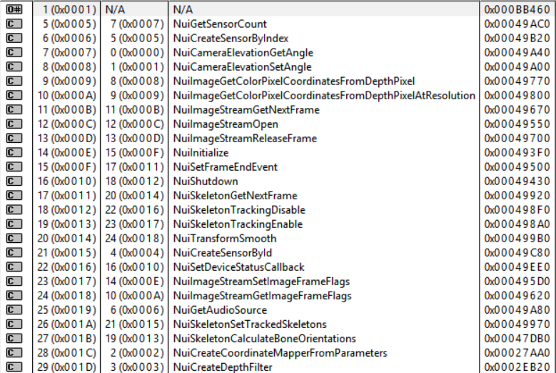

Philippe a commencé l’implémentation d’un système de gestion de gestuelles. Celui-ci permet de reconnaître un geste par segments. Chaque geste commence par un segment de début (ex : La main droite sous la hanche). Ensuite, on retrouve des segments de milieu (ex : La main droite entre les hanches et la tête). Plus il y a de segments de milieu, plus la reconnaissance du geste est précise. Finalement, il y a un segment de fin qui conclue le mouvement (ex : La main droite au-dessus de la tête). Le mouvement test implémenté est le « clap » dans lequel on balaie verticalement les bras en les refermant sur eux-mêmes.
Le système devrait être réutilisable pour tout type de gestuelle.
À l’aide de Depends (Dependency Walker), nous avons pu explorer le contenu des librairies Kinect utilisées. La librairie explorée ci-dessous est Kinect10.dll, soit la librairie officielle fournie par Microsoft. On retrouve ici les méthodes natives de la Kinect, soit le flux d’images, la reconnaissance audio, la reconnaissance de squelettes et d’autres contrôles de la machine elle-même. Ces méthodes sont utilisées par le « wrapper » du projet. Nous pouvons donc modifier ce « wrapper » pour accéder à d’autres méthodes qui nous semblent nécessaires.
Il est aussi intéressant de comprendre le pourquoi et le comment du « wrapper ». Nous pouvons comprendre d’où viennent les fonctionnalités et en ajouter, puisque la librairie n’est pas actuellement utilisée en son entier.
Après l’utilisation d’une vraie Kinect pour les tests de notre prototype, nous nous sommes rendus à l’évidence qu’il est dérangeant d’utiliser la machine chaque fois que nous voulons tester une fonctionnalité. Il est frustrant d’avoir à se lever à chaque lancement de l’application. Nous avons donc trouvé un émulateur de Kinect avec le « wrapper » utilisé dans le projet. Il permet d’enregistrer une série de mouvements et de la rejouer à tout moment dans l’application. Nous pouvons donc, par exemple, enregistrer une séquence dans laquelle nous naviguons dans les menus et lançons une partie. Cette fonctionnalité facilite grandement le développement et nous permettra d’avancer dans la création du prototype plus rapidement.